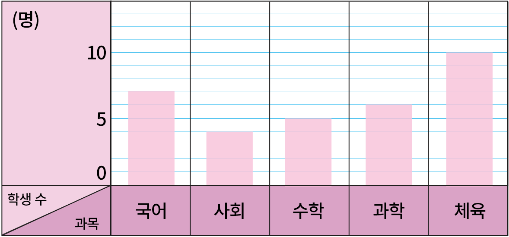

- 문제 1
- 문제 2
- 문제 3
- 문제 4
- 문제 5
- 문제 6
- 문제 7
- 문제 8
-
다음 그래프와 같이 조사한 자료의 수량을 막대 모양으로 나타낸 그래프를 무엇이라고 합니까?
친구에게 듣고 싶은 말(명)1000학생 수듣고 싶은 말넌 최고야고마워네가 좋아잘했어막대그래프 -
막대그래프로 나타냈을 때의 좋은 점을 써 보시오.
-
예
수의 크고 작음을 한눈에 알아보기 쉽습니다.
-
예
-
세로로 나타낸 막대그래프를 가로로 바꾸면 무엇이 바뀝니까?
-
예
그래프의 가로에 쓰는 것과 세로에 쓰는 것이 바뀝니다.
-
예
-
막대그래프에 대해 바르게 설명한 것을 고르시오.
-
ㄱ막대그래프는 조사한 수를 막대 모양으로 나타낸 그래프입니다.
-
ㄴ막대그래프는 전체 조사한 수의 합계를 한눈에 알아볼 수 있습니다.
ㄱ -
-
학생들이 좋아하는 과목을 조사하여 나타낸 표와 막대그래프입니다. 막대그래프에서 가로와 세로는 각각 무엇을 나타내는지 쓰시오.
좋아하는 과목별 학생 수과목 국어 사회 수학 과학 체육 합계 학생 수(명) 7 4 5 6 10 32 -

-
-
가로과목
-
세로학생 수
-
-
-
학생들이 좋아하는 과목을 조사하여 나타낸 표와 막대그래프입니다. 막대의 세로 눈금 한 칸은 몇 명인지 쓰시오.
좋아하는 과목별 학생 수과목 국어 사회 수학 과학 체육 합계 학생 수(명) 7 4 5 6 10 32 -
명1
-
표와 막대그래프 중 전체 학생 수를 알아보기에 어느 것이 더 편리한지 쓰시오.
좋아하는 과목별 학생 수과목 국어 사회 수학 과학 체육 합계 학생 수(명) 7 4 5 6 10 32 -
표
-
표와 막대그래프 중 학생들이 가장 좋아하는 과목을 한눈에 알아보기에 어느 것이 더 편리한지 쓰시오.
좋아하는 과목별 학생 수과목 국어 사회 수학 과학 체육 합계 학생 수(명) 7 4 5 6 10 32 -
막대그래프